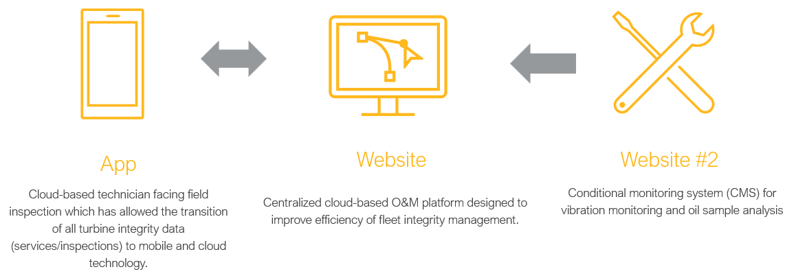

Sixteen months as a Reliability & Integrity Co-op Engineer in Power Operations — instrumenting decisions for roughly 300 wind turbines and a portfolio of solar assets, then leading a self-initiated CMMS rebuild as the largest side project I owned.

Renewable assets fail differently than thermal ones. A wind turbine doesn't announce itself with smoke — it drifts, gradually, through degrading bearings and misaligned yaw, until power output curves start to lie. The job was to catch the drift early — translating noisy fleet-wide telemetry into corrective decisions a planner could act on.
What does normal look like — so abnormal becomes obvious. The fleet doesn't announce a fault; it drifts. The work is building the lens that catches the drift early.
Built a set of Power BI dashboards that integrated AVEVA PI SCADA telemetry with SAP PM maintenance records to monitor equipment availability and inspection KPIs across the renewable fleet — replacing manual report assembly that had previously eaten a disproportionate share of engineering time.
The dashboards cut reporting time by ~40 %, and gave senior engineers and operations leadership a single live view of the fleet — availability, open work orders, fault frequency, and inspection backlog rolled up by site, asset class, and OEM.
They weren't decorative. They sat in front of decisions about which turbines to take offline for inspection, which strings to pull off solar combiners, and where to re-prioritise corrective work orders.

Alongside the core reliability work, I designed a Computerized Maintenance Management System tailored to the renewable fleet's inspection, work-order, and KPI patterns — the largest side project I owned during my time at Enbridge.
The existing maintenance workflow stitched together SAP, spreadsheets, and tribal knowledge — every layer hiding a different data quality problem. The new CMMS pulled the asset hierarchy, work-order routing, inspection schedules, and reliability KPIs into a single coherent system the field could actually use.
The CMMS work shaped how I think about reliability tooling now: instrumented decisions, low-friction data entry, and dashboards that answer the question planners actually ask.
A system runs only as well as the people running it understand the parts under load. Good reliability tooling shortens the distance between a signal in the field and a decision at a planner's desk.

Outside of the engineering work, I volunteered with the Enbridge Tour Alberta For Cancer (ETFAC) — a two-day cycling event that raises funds for the Alberta Cancer Foundation and cancer research at the Cross Cancer Institute.
Working the event was a different kind of engineering — logistics, route support, hospitality — but the shared principle held: the people behind the assets matter as much as the assets themselves. A reminder worth carrying back into the dashboards.
The Intern of Merit award is given annually to roughly the top 15 % of Enbridge's co-op cohort. It reflects the engineering impact and the way the work was carried — collaboratively, with the operations and maintenance teams who keep the fleet running, and the junior co-ops I mentored along the way.